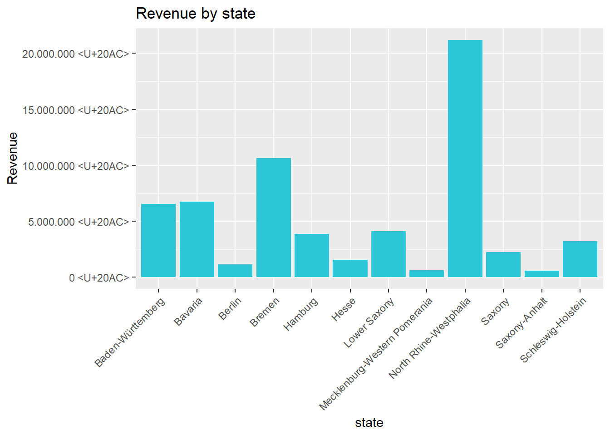
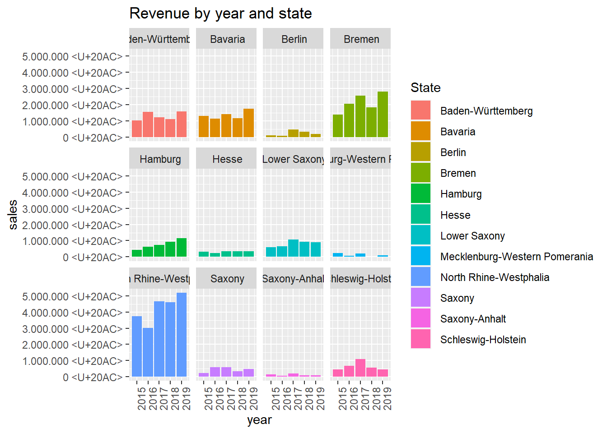
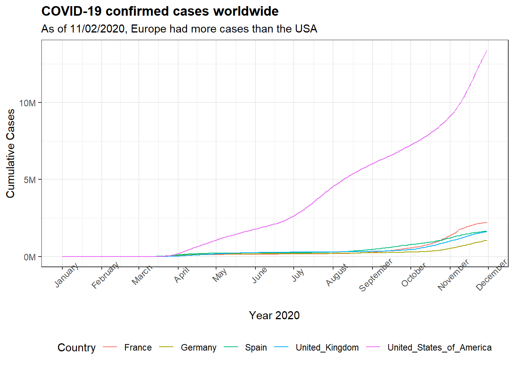
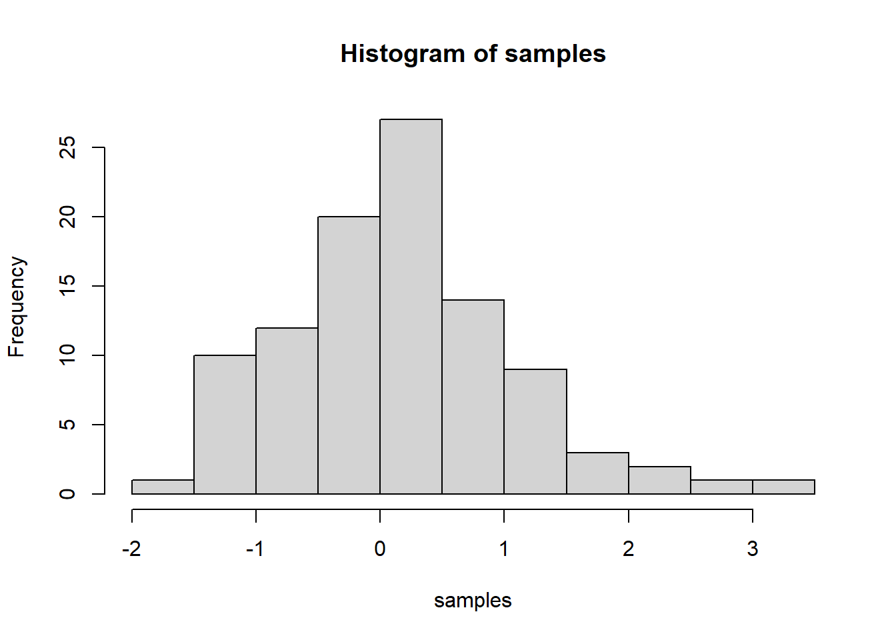

Journal (reproducible report)
Nana Sekyere Lewis
2020-11-05
IMPORTANT: You can delete everything in here and start fresh. You might want to start by not deleting anything above this line until you know what that stuff is doing.
This is an .Rmd file. It is plain text with special features. Any time you write just like this, it will be compiled to normal text in the website. If you put a # in front of your text, it will create a top level-header.
1 My first post
# Data Science at TUHH ------------------------------------------------------
#Challenge 1 -Introduction to the Tidyverse ----
# 1.0 Load libraries ----
library(tidyverse)
library(readxl)
# 2.0 Importing Files ----
# A good convention is to use the file name and suffix it with tbl for the data structure tibble
bikes_tbl <- read_excel(path = "~/R_scripts/DS_101/00_data/01_bike_sales/01_raw_data/bikes.xlsx")
orderlines_tbl <- read_excel("~/R_scripts/DS_101/00_data/01_bike_sales/01_raw_data/orderlines.xlsx")
# Not necessary for this analysis, but for the sake of completeness
bikeshops_tbl <- read_excel("~/R_scripts/DS_101/00_data/01_bike_sales/01_raw_data/bikeshops.xlsx")
# 3.0 Examining Data ----
left_join(orderlines_tbl, bikes_tbl, by = c("product.id" = "bike.id"))## # A tibble: 15,644 x 15
## ...1 order.id order.line order.date customer.id product.id quantity
## <chr> <dbl> <dbl> <dttm> <dbl> <dbl> <dbl>
## 1 1 1 1 2015-01-07 00:00:00 2 2681 1
## 2 2 1 2 2015-01-07 00:00:00 2 2411 1
## 3 3 2 1 2015-01-10 00:00:00 10 2629 1
## 4 4 2 2 2015-01-10 00:00:00 10 2137 1
## 5 5 3 1 2015-01-10 00:00:00 6 2367 1
## 6 6 3 2 2015-01-10 00:00:00 6 1973 1
## 7 7 3 3 2015-01-10 00:00:00 6 2422 1
## 8 8 3 4 2015-01-10 00:00:00 6 2655 1
## 9 9 3 5 2015-01-10 00:00:00 6 2247 1
## 10 10 4 1 2015-01-11 00:00:00 22 2408 1
## # ... with 15,634 more rows, and 8 more variables: model <chr>,
## # model.year <dbl>, frame.material <chr>, weight <dbl>, price <dbl>,
## # category <chr>, gender <chr>, url <chr># 4.0 Joining Data ----
# Chaining commands with the pipe and assigning it to order_items_joined_tbl
bike_orderlines_joined_tbl <- orderlines_tbl %>%
left_join(bikes_tbl, by = c("product.id" = "bike.id")) %>%
left_join(bikeshops_tbl, by = c("customer.id" = "bikeshop.id"))
# 5.0 Wrangling Data ----
bike_orderlines_wrangled_tbl <- bike_orderlines_joined_tbl %>%
# 4.1 Separate category name
separate(col = category,
into = c("category.1", "category.2", "category.3"),
sep = " - ") %>%
# 4.2 Add the total price (price * quantity)
# Add a column to a tibble that uses a formula-style calculation of other columns
mutate(total.price = price * quantity) %>%
# 4.3 Optional: Reorganize. Using select to grab or remove unnecessary columns
# 4.3.1 by exact column name
select(-...1, -gender) %>%
# 4.3.2 by a pattern
# You can use the select_helpers to define patterns.
# Type ?ends_with and click on Select helpers in the documentation
select(-ends_with(".id")) %>%
# 4.3.3 Actually we need the column "order.id". Let's bind it back to the data
bind_cols(bike_orderlines_joined_tbl %>% select(order.id)) %>%
# 4.3.4 You can reorder the data by selecting the columns in your desired order.
# You can use select_helpers like contains() or everything()
select(order.id, contains("order"), contains("model"), contains("category"),
price, quantity, total.price,
everything()) %>%
# 4.4 Rename columns because we actually wanted underscores instead of the dots
# (one at the time vs. multiple at once)
rename(bikeshop = name) %>%
set_names(names(.) %>% str_replace_all("\\.", "_"))
#Check location multiple features (State and city)
#bike_orderlines_wrangled_tbl$location
#Probably unecessary code but also helps to see just the location column
bike_orderlines_wrangled_tbl %>%
select(location) %>%
filter(str_detect(location, "^Hamburg"))## # A tibble: 975 x 1
## location
## <chr>
## 1 Hamburg, Hamburg
## 2 Hamburg, Hamburg
## 3 Hamburg, Hamburg
## 4 Hamburg, Hamburg
## 5 Hamburg, Hamburg
## 6 Hamburg, Hamburg
## 7 Hamburg, Hamburg
## 8 Hamburg, Hamburg
## 9 Hamburg, Hamburg
## 10 Hamburg, Hamburg
## # ... with 965 more rows#Challenge begins
#4.5 Split location into state and city
bike_orderlines_wrangled2_tbl <- bike_orderlines_wrangled_tbl %>%
separate(col = location,
into = c("city", "state"),
sep = (","))
# 6.0 Business Insights ----
# 6.1 Sales by location (State) ----
# Step 1 - Manipulate
sales_by_state_tbl <- bike_orderlines_wrangled2_tbl %>%
# Select columns
select(state, total_price) %>%
# Grouping by state and summarizing sales
group_by(state) %>%
summarize(sales = sum(total_price)) %>%
# Add a column that turns the numbers into a currency format
# mutate(sales_text = scales::dollar(sales)) <- Works for dollar values
mutate(sales_text = scales::dollar(sales, big.mark = ".",
decimal.mark = ",",
prefix = "",
suffix = " €"))
sales_by_state_tbl## # A tibble: 12 x 3
## state sales sales_text
## <chr> <dbl> <chr>
## 1 " Baden-W\u00fcrttemberg" 6521090 6.521.090 <U+20AC>
## 2 " Bavaria" 6742819 6.742.819 <U+20AC>
## 3 " Berlin" 1128433 1.128.433 <U+20AC>
## 4 " Bremen" 10653499 10.653.499 <U+20AC>
## 5 " Hamburg" 3874756 3.874.756 <U+20AC>
## 6 " Hesse" 1558901 1.558.901 <U+20AC>
## 7 " Lower Saxony" 4107115 4.107.115 <U+20AC>
## 8 " Mecklenburg-Western Pomerania" 618974 618.974 <U+20AC>
## 9 " North Rhine-Westphalia" 21200613 21.200.613 <U+20AC>
## 10 " Saxony" 2230245 2.230.245 <U+20AC>
## 11 " Saxony-Anhalt" 569614 569.614 <U+20AC>
## 12 " Schleswig-Holstein" 3224749 3.224.749 <U+20AC># Step 2 - Visualize
#Plot bar chart(This is for Rmarkdown. Not sure how to use that just about yet)
#```{r plot, fig.width=10, fig.height=7}
#step 2: Visualize
#plot a bar chart
sales_by_state_tbl %>%
# Setup canvas with the columns year (x-axis) and sales (y-axis)
ggplot(aes(x = state, y = sales)) +
# Geometries
geom_col(fill = "#2DC6D6") + # Use geom_col for a bar plot
#geom_label(aes(label = sales_text)) + # Adding labels to the bars
#geom_smooth(method = "lm", se = FALSE) + # Adding a trendline
# Formatting
# scale_y_continuous(labels = scales::dollar) + # Change the y-axis.
# Again, we have to adjust it for euro values
scale_y_continuous(labels = scales::dollar_format(big.mark = ".",
decimal.mark = ",",
prefix = "",
suffix = " €")) +
labs(
title = "Revenue by state",
#subtitle = "Upward Trend",
x = "state", # Override defaults for x and y
y = "Revenue")+
theme(axis.text.x = element_text(angle = 45, hjust = 1))#rotate x-axis 
# 6.2 Sales by Location (State) and Category 2 ----
library(lubridate)
# Step 1 - Manipulate
sales_by_year_by_state_tbl <- bike_orderlines_wrangled2_tbl %>%
# Select columns and add a year
select(order_date, total_price, state) %>%
mutate(year = year(order_date)) %>%
# Group by and summarize year and state
group_by(year, state) %>%
summarise(sales = sum(total_price)) %>%
ungroup() %>%
# Format $ Text
mutate(sales_text = scales::dollar(sales, big.mark = ".",
decimal.mark = ",",
prefix = "",
suffix = " €")) %>%
arrange(desc(sales))
sales_by_year_by_state_tbl## # A tibble: 60 x 4
## year state sales sales_text
## <dbl> <chr> <dbl> <chr>
## 1 2019 " North Rhine-Westphalia" 5189507 5.189.507 <U+20AC>
## 2 2017 " North Rhine-Westphalia" 4671541 4.671.541 <U+20AC>
## 3 2018 " North Rhine-Westphalia" 4601681 4.601.681 <U+20AC>
## 4 2015 " North Rhine-Westphalia" 3735092 3.735.092 <U+20AC>
## 5 2016 " North Rhine-Westphalia" 3002792 3.002.792 <U+20AC>
## 6 2019 " Bremen" 2808838 2.808.838 <U+20AC>
## 7 2017 " Bremen" 2557145 2.557.145 <U+20AC>
## 8 2016 " Bremen" 2057760 2.057.760 <U+20AC>
## 9 2018 " Bremen" 1833844 1.833.844 <U+20AC>
## 10 2019 " Bavaria" 1730872 1.730.872 <U+20AC>
## # ... with 50 more rows# Step 2 - Visualize
#Plot bar chart(facet_wrap)
sales_by_year_by_state_tbl %>%
# Set up x, y, fill
ggplot(aes(x = year, y = sales, fill = state)) +
# Geometries
geom_col() + # Run up to here to get a stacked bar plot
# Facet
facet_wrap(~ state) +
# Formatting
scale_y_continuous(labels = scales::dollar_format(big.mark = ".",
decimal.mark = ",",
prefix = "",
suffix = " €")) +
labs(
title = "Revenue by year and state",
fill = "State" # Changes the legend name
)+
theme(axis.text.x = element_text(angle = 90, hjust = 1))
# 7.0 Writing Files ----
#6.1 Excel ----
library("writexl")
bike_orderlines_wrangled2_tbl %>%
write_xlsx("~/R_scripts/DS_101/00_data/01_bike_sales/02_wrangled_data/bike_orderlines2.xlsx")
# 6.2 CSV ----
bike_orderlines_wrangled2_tbl %>%
write_csv("~/R_scripts/DS_101/00_data/01_bike_sales/02_wrangled_data/bike_orderlines2.csv")
# 6.3 RDS ----
bike_orderlines_wrangled2_tbl %>%
write_rds("~/R_scripts/DS_101/00_data/01_bike_sales/02_wrangled_data/bike_orderlines2.rds")Last compiled: 2020-12-29
Notice that whatever you define as a top level header, automatically gets put into the table of contents bar on the left.
1.1 Second level header
You can add more headers by adding more hashtags. These won’t be put into the table of contents
1.1.1 third level header
Here’s an even lower level header
2 My second post (note the order)
#Challenge 2.0 : Data Acquisition ----
#Load Relevant Packages
library(glue)
library(httr)
library(purrr)
library(tidyverse)
library(rvest)
library(xopen)
library(jsonlite)
library(stringi)
library(jsonlite)
#2.1: Data from an API ----
#A COVID API.
coro_url <- "https://api.covid19api.com/"
xopen(coro_url) # Open links directly from RStudio to inspect them## Running cmd /c start "\"\"" /b "https://api.covid19api.com/"#lets try to get something
coro_data <- GET(coro_url)
coro_data## Response [https://api.covid19api.com/]
## Date: 2020-11-30 21:51
## Status: 200
## Content-Type: application/json; charset=UTF-8
## Size: 6.5 kB
## {"countriesRoute":{"Name":"Get List Of Countries","Description":"Returns all countries and associated provi...coro_data_list <- coro_data %>%
.$content %>%
rawToChar() %>%
fromJSON()
coro_data_list## $countriesRoute
## $countriesRoute$Name
## [1] "Get List Of Countries"
##
## $countriesRoute$Description
## [1] "Returns all countries and associated provinces. The country_slug variable is used for country specific data"
##
## $countriesRoute$Path
## [1] "/countries"
##
##
## $countryDayOneRoute
## $countryDayOneRoute$Name
## [1] "Get List Of Cases Per Country Per Province By Case Type From The First Recorded Case"
##
## $countryDayOneRoute$Description
## [1] "Returns all cases by case type for a country from the first recorded case. Country must be the country_slug from /countries. Cases must be one of: confirmed, recovered, deaths"
##
## $countryDayOneRoute$Path
## [1] "/dayone/country/:country"
##
##
## $countryDayOneTotalRoute
## $countryDayOneTotalRoute$Name
## [1] "Get List Of Cases Per Country By Case Type From The First Recorded Case"
##
## $countryDayOneTotalRoute$Description
## [1] "Returns all cases by case type for a country from the first recorded case. Country must be the country_slug from /countries. Cases must be one of: confirmed, recovered, deaths"
##
## $countryDayOneTotalRoute$Path
## [1] "/total/dayone/country/:country"
##
##
## $countryRoute
## $countryRoute$Name
## [1] "Get List Of Cases Per Country Per Province By Case Type"
##
## $countryRoute$Description
## [1] "Returns all cases by case type for a country. Country must be the country_slug from /countries. Cases must be one of: confirmed, recovered, deaths"
##
## $countryRoute$Path
## [1] "/country/:country"
##
##
## $countryRoutePremium
## $countryRoutePremium$Name
## [1] "Premium Data: Get List Of Cases Per Country By Case Type"
##
## $countryRoutePremium$Description
## [1] "Returns all cases by case type for a country. Country must be the country_slug from /countries. Cases must be one of: confirmed, recovered, deaths"
##
## $countryRoutePremium$Path
## [1] "/premium/country/:country"
##
##
## $countryRoutePremiumData
## $countryRoutePremiumData$Name
## [1] "Premium Data: Get Data Per Country"
##
## $countryRoutePremiumData$Description
## [1] "Returns all cases by case type for a country. Country must be the country_slug from /countries. Cases must be one of: confirmed, recovered, deaths"
##
## $countryRoutePremiumData$Path
## [1] "/premium/country/data/:country"
##
##
## $countryStatusDayOneLiveRoute
## $countryStatusDayOneLiveRoute$Name
## [1] "Get List Of Cases Per Country Per Province By Case Type From The First Recorded Case, updated with latest live count"
##
## $countryStatusDayOneLiveRoute$Description
## [1] "Returns all cases by case type for a country from the first recorded case with the latest record being the live count. Country must be the country_slug from /countries. Cases must be one of: confirmed, recovered, deaths"
##
## $countryStatusDayOneLiveRoute$Path
## [1] "/dayone/country/:country/status/:status/live"
##
##
## $countryStatusDayOneRoute
## $countryStatusDayOneRoute$Name
## [1] "Get List Of Cases Per Country Per Province By Case Type From The First Recorded Case"
##
## $countryStatusDayOneRoute$Description
## [1] "Returns all cases by case type for a country from the first recorded case. Country must be the country_slug from /countries. Cases must be one of: confirmed, recovered, deaths"
##
## $countryStatusDayOneRoute$Path
## [1] "/dayone/country/:country/status/:status"
##
##
## $countryStatusDayOneTotalRoute
## $countryStatusDayOneTotalRoute$Name
## [1] "Get List Of Cases Per Country By Case Type From The First Recorded Case"
##
## $countryStatusDayOneTotalRoute$Description
## [1] "Returns all cases by case type for a country from the first recorded case. Country must be the country_slug from /countries. Cases must be one of: confirmed, recovered, deaths"
##
## $countryStatusDayOneTotalRoute$Path
## [1] "/total/dayone/country/:country/status/:status"
##
##
## $countryStatusLiveRoute
## $countryStatusLiveRoute$Name
## [1] "Daily list of cases per Country per Province by Case Type, updated with latest live count"
##
## $countryStatusLiveRoute$Description
## [1] "Returns all cases by case type for a country with the latest record being the live count. Country must be the country_slug from /countries. Cases must be one of: confirmed, recovered, deaths"
##
## $countryStatusLiveRoute$Path
## [1] "/country/:country/status/:status/live"
##
##
## $countryStatusRoute
## $countryStatusRoute$Name
## [1] "Get List Of Cases Per Country Per Province By Case Type"
##
## $countryStatusRoute$Description
## [1] "Returns all cases by case type for a country. Country must be the country_slug from /countries. Cases must be one of: confirmed, recovered, deaths"
##
## $countryStatusRoute$Path
## [1] "/country/:country/status/:status"
##
##
## $countryStatusTotalRoute
## $countryStatusTotalRoute$Name
## [1] "Get List Of Cases Per Country By Case Type"
##
## $countryStatusTotalRoute$Description
## [1] "Returns all cases by case type for a country. Country must be the country_slug from /countries. Cases must be one of: confirmed, recovered, deaths"
##
## $countryStatusTotalRoute$Path
## [1] "/total/country/:country/status/:status"
##
##
## $countrySummaryRoutePremium
## $countrySummaryRoutePremium$Name
## [1] "Premium Data: Get Summary Of World Case Data"
##
## $countrySummaryRoutePremium$Description
## [1] "Returns summary of all country data"
##
## $countrySummaryRoutePremium$Path
## [1] "/premium/summary"
##
##
## $countryTestingPremium
## $countryTestingPremium$Name
## [1] "Premium Data: Get Testing Data Per Country"
##
## $countryTestingPremium$Description
## [1] "Get data around testing"
##
## $countryTestingPremium$Path
## [1] "/premium/country/testing/:country"
##
##
## $countryTotalRoute
## $countryTotalRoute$Name
## [1] "Get List Of Cases Per Country By Case Type"
##
## $countryTotalRoute$Description
## [1] "Returns all cases by case type for a country. Country must be the country_slug from /countries. Cases must be one of: confirmed, recovered, deaths"
##
## $countryTotalRoute$Path
## [1] "/total/country/:country"
##
##
## $exportRoute
## $exportRoute$Name
## [1] "Get All Data as a zip file"
##
## $exportRoute$Description
## [1] "Returns all data in the system, compressed as a zip file. Warning: this request returns 8MB+ and takes 5+ seconds"
##
## $exportRoute$Path
## [1] "/export"
##
##
## $liveCountryRoute
## $liveCountryRoute$Name
## [1] "Get Live List Of Cases Per Country Per Province By Case Type"
##
## $liveCountryRoute$Description
## [1] "Returns all live cases by case type for a country. These records are pulled every 10 minutes and are ungrouped. Country must be the country_slug from /countries. Cases must be one of: confirmed, recovered, deaths"
##
## $liveCountryRoute$Path
## [1] "/live/country/:country"
##
##
## $liveCountryStatusAfterDateRoute
## $liveCountryStatusAfterDateRoute$Name
## [1] "Get a Time Series Of Cases Per Country Per Province By Case Type After A Date"
##
## $liveCountryStatusAfterDateRoute$Description
## [1] "Returns all live cases by case type for a country after a given date. These records are pulled every 10 minutes and are ungrouped. Country must be the country_slug from /countries. Cases must be one of: confirmed, recovered, deaths"
##
## $liveCountryStatusAfterDateRoute$Path
## [1] "/live/country/:country/status/:status/date/:date"
##
##
## $liveCountryStatusRoute
## $liveCountryStatusRoute$Name
## [1] "Get a time series Of Cases Per Country Per Province By Case Type"
##
## $liveCountryStatusRoute$Description
## [1] "Returns all live cases by case type for a country. These records are pulled every 10 minutes and are ungrouped. Country must be the country_slug from /countries. Cases must be one of: confirmed, recovered, deaths"
##
## $liveCountryStatusRoute$Path
## [1] "/live/country/:country/status/:status"
##
##
## $summaryRoute
## $summaryRoute$Name
## [1] "Summary of new and total cases per country"
##
## $summaryRoute$Description
## [1] "A summary of new and total cases per country"
##
## $summaryRoute$Path
## [1] "/summary"
##
##
## $travelAdvicePremium
## $travelAdvicePremium$Name
## [1] "Premium Data: Travel information for a given country"
##
## $travelAdvicePremium$Description
## [1] "Returns all cases by case type for a country. Country must be the country_slug from /countries. Cases must be one of: confirmed, recovered, deaths"
##
## $travelAdvicePremium$Path
## [1] "/premium/travel/country/:country"
##
##
## $webhookRoute
## $webhookRoute$Name
## [1] "Add a webhook to be notified when new data becomes available"
##
## $webhookRoute$Description
## [1] "POST Request must be in JSON format with key URL and the value of the webhook. Response data is the same as returned from /summary"
##
## $webhookRoute$Path
## [1] "/webhook"#2.2: Web Scraping ----
#Task: Scrape one of the competitor websites of canyon
#(either https://www.rosebikes.de/ or https://www.radon-bikes.de)
#create a small database.
#database should contain the "model names" and "prices" for
#"at least one category".
#Print the first 10 rows of your tibbles.
#2.2.1 Bicycle Categories ----
#assign the URL to a variable
rosebikes_category_url <- "https://www.rosebikes.de/fahrr%C3%A4der"
xopen(rosebikes_category_url)## Running cmd /c start "\"\"" /b "https://www.rosebikes.de/fahrr%C3%A4der"#read in the html from the URL
rosebikes_category_html <- rosebikes_category_url %>%
read_html()
# Select the correct html nodes and extract the category
rosebikes_categories_tbl <-rosebikes_category_html %>%
html_nodes(css =".catalog-navigation__list-item > a ") %>%
html_attr("title") %>%
#turn the vector into a table
enframe(name = "position", value = "category")
rosebikes_categories_tbl## # A tibble: 12 x 2
## position category
## <int> <chr>
## 1 1 MTB
## 2 2 Rennrad
## 3 3 Gravel
## 4 4 E-Bike
## 5 5 Cyclocross
## 6 6 Trekking
## 7 7 Fitness
## 8 8 Reise
## 9 9 Urban
## 10 10 Kinder
## 11 11 Sale
## 12 12 Bike-Finder#2.2.2 Model and Price ----
#now to get the models under "kinder"
rosebikes_kinder_url <- "https://www.rosebikes.de/fahrr%C3%A4der/kinder"
#xopen(rosebikes_kinder_url)
### read in the html from the URL
rosebikes_kinder_html <- rosebikes_kinder_url %>%
read_html()
#get data from JSON format about the model name and price
rosebikes_kinder_json_tbl <- rosebikes_kinder_html %>%
html_nodes(css = ".catalog-product-tile__link") %>%
html_attr("onclick")
#remove "window.dataLayer.push(" and ")"
rosebikes_kinder_tbl <- rosebikes_kinder_json_tbl %>%
str_remove_all("window.dataLayer.push\\(") %>%
str_remove("\\)$") %>%
# Convert the JSON format to dataframe
# map runs that function on each element of the list
map(fromJSON) %>% # need JSON ### need lists
# Extract relevant information of the nested list
map(purrr::pluck, "ecommerce","click","products") %>% # Need purrr and expl above
# Stack all lists together
bind_rows() %>%
# Convert to tibble so that we have the same data format
as_tibble()
rosebikes_kinder_tbl## # A tibble: 10 x 8
## name id price brand category variant list position
## <chr> <chr> <chr> <chr> <chr> <chr> <chr> <chr>
## 1 "Seeker 16" 230187201 399.95 Early Rider "Fahrr\u00e4der/Kinder/EARLY RID~ aluminiumfarb~ catego~ 1
## 2 "Belter 16" 230186601 399.95 Early Rider "Fahrr\u00e4der/Kinder/EARLY RID~ aluminiumfarb~ catego~ 2
## 3 "Belter 14 " 230186501 379.95 Early Rider "Fahrr\u00e4der/Kinder/EARLY RID~ aluminiumfarb~ catego~ 3
## 4 "NOOB" 227196901 129 ROSE "Fahrr\u00e4der/Kinder/NOOB" dark blue/bla~ catego~ 4
## 5 "Seeker 20 " 230457401 599 Early Rider "Fahrr\u00e4der/Kinder/EARLY RID~ aluminiumfarb~ catego~ 5
## 6 "Belter 24" 230186801 649 Early Rider "Fahrr\u00e4der/Kinder/EARLY RID~ aluminiumfarb~ catego~ 6
## 7 "Seeker 24 " 230457501 724.95 Early Rider "Fahrr\u00e4der/Kinder/EARLY RID~ aluminiumfarb~ catego~ 7
## 8 "Seeker 14" 230187101 399.95 Early Rider "Fahrr\u00e4der/Kinder/EARLY RID~ aluminiumfarb~ catego~ 8
## 9 "Belter 20" 230186701 549.99 Early Rider "Fahrr\u00e4der/Kinder/EARLY RID~ aluminiumfarb~ catego~ 9
## 10 "Charger 12" 230186901 169.95 Early Rider "Fahrr\u00e4der/Kinder/EARLY RID~ aluminiumfarb~ catego~ 103 My third post
#1. Libraries ----
#Lets load some libraries
#Better load a lot of libraries than run into some errors :)
#Dont be surprised when I dont use some
library(glue)
library(httr)
library(purrr)
library(tidyverse)
library(rvest)
library(xopen)
library(jsonlite)
library(stringi)
library(jsonlite)
library(readxl)
library(lubridate)
library("writexl")
library(vroom)
library(data.table)
library(tictoc)
library(magrittr)
# Question Table
# 1 assignee, patent_assignee
# 2 assignee, patent_assignee, patent
# 3 assignee, patent_assignee, uspc
#2.1 Assignee Data ----
assignee_col_types <- list(
id = col_character(),
type = col_character(),
organization = col_character()
)
assignee_tbl <- vroom(
file = "~/R_scripts/patent_data/Patent_data_reduced/assignee.tsv",
delim = "\t",
col_types = assignee_col_types,
na = c("", "NA", "NULL")
)
#2.2 Patent_assignee Data ----
patent_assignee_col_types <- list(
patent_id = col_character(),
assignee_id = col_character()
)
patent_assignee_tbl <- vroom(
file = "~/R_scripts/patent_data/Patent_data_reduced/patent_assignee.tsv",
delim = "\t",
col_types = patent_assignee_col_types,
na = c("", "NA", "NULL")
)
#2.3 Patent Data ----
patent_col_types <- list(
id = col_character(),
date = col_date("%Y-%m-%d"),
num_claims = col_double()
)
patent_tbl <- vroom(
file = "~/R_scripts/patent_data/Patent_data_reduced/patent.tsv",
delim = "\t",
col_types = patent_col_types,
na = c("", "NA", "NULL")
)
#2.4 USPC data
uspc_col_types <- list(
patent_id = col_character(),
mainclass_id = col_character(),
sequence = col_character()
)
uspc_tbl <- vroom(
file = "~/R_scripts/patent_data/Patent_data_reduced/uspc.tsv",
delim = "\t",
col_types = uspc_col_types,
na = c("", "NA", "NULL")
)
#3.0 Check for class and Set as data.table
#Check class
class(assignee_tbl)## [1] "tbl_df" "tbl" "data.frame"#SetDT
setDT(assignee_tbl)
setDT(patent_assignee_tbl)
setDT(uspc_tbl)
setDT(patent_tbl)
#Step1: Join data(assignee and patent assignee)
#data.table code
# patent_dominance_tbl <- merge(x = assignee_tbl, y = patent_assignee_tbl,
# by = c("id" = "assignee_id"),
# all.x = TRUE,
# all.y = FALSE)
# patent_dominance_tbl %>% glimpse()
#
patent_dominance_tbl <- assignee_tbl %>%
left_join(patent_assignee_tbl, by = c("id" = "assignee_id"))
patent_dominance_tbl %>% glimpse()## Rows: 315,910
## Columns: 4
## $ id <chr> "org_004j997jM9yEdS7z4ReD", "org_004j997jM9yEdS7z4ReD", "org_005hVGA5JMOZs...
## $ type <chr> "3", "3", "3", "2", "2", "3", "3", "2", "3", "3", "2", "2", "3", "2", "2",...
## $ organization <chr> "University of Basel", "University of Basel", "Zetkama Sp<U+00F3>lka Akcyjna", "M...
## $ patent_id <chr> "8728438", "8921361", "8857791", "8845559", "8645286", "8815936", "8672803...#Step2: Summarize data
patent_dominance_tbl %>%
group_by(organization) %>%
summarise(patent_dominance = n()) %>%
ungroup() %>%
arrange(desc(patent_dominance))## # A tibble: 45,004 x 2
## organization patent_dominance
## <chr> <int>
## 1 International Business Machines Corporation 7547
## 2 Samsung Electronics Co., Ltd. 5835
## 3 Canon Kabushiki Kaisha 4099
## 4 Sony Corporation 3326
## 5 Microsoft Corporation 3165
## 6 Google Inc. 2668
## 7 Kabushiki Kaisha Toshiba 2656
## 8 QUALCOMM Incorporated 2597
## 9 LG Electronics Inc. 2459
## 10 <NA> 2377
## # ... with 44,994 more rows#CHANGE COLUMN_NAME IN PATENT_TBL, ID=PATENT_ID
setnames(patent_tbl, "id", "patent_id")
recent_patent_activity_tbl <- patent_dominance_tbl%>%
left_join(patent_tbl, by = "patent_id")
#Step2: Summarize data by organization and Year
recent_patent_activity_date_tbl <- recent_patent_activity_tbl %>%
separate(col = date,
into = c("year", "month", "day"),
sep = "-", remove = FALSE)
recent_patent_activity_date_tbl %>%
filter(month == 10) %>%
group_by(organization) %>%
summarise(recent_patent_activity = n()) %>%
ungroup() %>%
arrange(desc(recent_patent_activity))## # A tibble: 8,115 x 2
## organization recent_patent_activity
## <chr> <int>
## 1 International Business Machines Corporation 670
## 2 Samsung Electronics Co., Ltd. 551
## 3 Canon Kabushiki Kaisha 330
## 4 Sony Corporation 275
## 5 Kabushiki Kaisha Toshiba 249
## 6 Google Inc. 244
## 7 LG Electronics Inc. 226
## 8 Microsoft Corporation 223
## 9 QUALCOMM Incorporated 219
## 10 <NA> 204
## # ... with 8,105 more rows#Step: Join data(assignee, patent_assignee(patent_dominance_tbl), uspc)
innovation_in_tech_tbl <- patent_dominance_tbl%>%
left_join(uspc_tbl, by = "patent_id")
top_10_patents <- innovation_in_tech_tbl %>%
select(organization, patent_id, mainclass_id) %>%
group_by(organization,mainclass_id) %>%
summarise(top_10 = n()) %>%
ungroup() %>%
arrange(desc(top_10))
top_10_patents %>%
select(organization,mainclass_id)%>%
group_by(mainclass_id) %>%
summarise(top_5_USPO = n()) %>%
ungroup %>%
arrange(desc(top_5_USPO))## # A tibble: 604 x 2
## mainclass_id top_5_USPO
## <chr> <int>
## 1 <NA> 16758
## 2 435 2474
## 3 514 2431
## 4 424 2295
## 5 705 1775
## 6 709 1759
## 7 455 1702
## 8 340 1667
## 9 428 1483
## 10 370 1452
## # ... with 594 more rows4 My last post :)
#Question 1: Cumulative Covid-19 cases
#Goal:
#Map the time course of the cumulative Covid-19 cases!
#Your plot should look like this
#Los gehts!!!!!
#Lets go
#STEP 1
#LOAD LIBRARIES
library(tidyverse)
library(lubridate)
library(ggthemes)
#Step 2
#Load Data
covid_data_tbl <- read_csv("https://opendata.ecdc.europa.eu/covid19/casedistribution/csv")
#Step 3
#Data Manipulation
#Do not forget to ungroup
cumulative_cases_tbl <- covid_data_tbl %>%
filter(year == 2020) %>%
filter(countriesAndTerritories %in% c("Germany", "United_Kingdom", "France", "Spain", "United_States_of_America")) %>%
filter(month %in% c(1:11)) %>%
select(month,dateRep, countriesAndTerritories, cases) %>%
mutate(date = dmy(dateRep)) %>%
arrange(date) %>%
group_by(countriesAndTerritories) %>%
mutate(cum_cases = cumsum(cases)) %>%
ungroup ()
#Step 4
#Data Visualisation
cumulative_cases_tbl %>%
#Canvas
ggplot(aes(x = date, y =cum_cases, color = countriesAndTerritories)) +
#Geometries
geom_line(size = 0.5, linetype = 1) +
# geom_label(aes(label = label_txt),
# hjust = "inward",
# size = 2) +
#
#Formatting
expand_limits(y = 0.0) +
scale_x_date(breaks = "1 month", date_labels = "%B") +
# scale_x_continuous(breaks = cumulative_cases_tbl$month,
# labels = month(cumulative_cases_tbl$date, label = T)) +
scale_y_continuous(labels = scales::dollar_format(scale = 1/1e6,
big.mark = ".",
decimal.mark = ",",
prefix = "",
suffix = "M")) +
# breaks = seq(0, 000000, by =8)) +
labs(
title = "COVID-19 confirmed cases worldwide",
subtitle = "As of 11/02/2020, Europe had more cases than the USA",
x = "Year 2020",
y = "Cumulative Cases",
color = "Country") +
theme_bw() +
theme(legend.position = "bottom",
legend.direction = "horizontal",
axis.text.x = element_text(angle = 45),
plot.title = element_text(face = "bold")
)
#ON TO THE NEXT ONE
#Question 2
# Goal
#Visualize the distribution of the mortality rate (deaths / population) with
# geom_map().
#Additional librarz
library(maps)
world <- map_data("world")
covid_mortality_rate_tbl <- covid_data_tbl %>%
select(countriesAndTerritories, deaths, popData2019, continentExp) %>%
group_by(countriesAndTerritories, popData2019)%>%
summarise(sum_deaths_country = sum(deaths)) %>%
mutate(mortality_rate = sum_deaths_country / popData2019) %>%
ungroup() %>%
mutate(across(countriesAndTerritories, str_replace_all, "_", " ")) %>%
mutate(countriesAndTerritories = case_when(
countriesAndTerritories == "United Kingdom" ~ "UK",
countriesAndTerritories == "United States of America" ~ "USA",
countriesAndTerritories == "Czechia" ~ "Czech Republic",
TRUE ~ countriesAndTerritories
))
Map_tbl <- covid_mortality_rate_tbl %>%
left_join(world, by = c( "countriesAndTerritories" = "region")) %>%
rename(region = countriesAndTerritories)
#Data Visualization
Map_tbl %>%
ggplot() +
geom_map(aes(map_id = region, fill = mortality_rate ), map = world ) +
expand_limits(x= Map_tbl$long, y =Map_tbl$lat) +
scale_fill_gradient(low = "#ee4540", high = "#2d142c", labels = scales::percent) +
labs(
title = "Confirmed COVID-19 deaths relative to the size of the population",
subtitle = "More than 1.2 Million confirmed COVID-19 deaths worldwide",
x = " ",
y = " ",
color = "Mortality Rate") +
theme_dark() +
theme(legend.position = "right",
legend.direction = "vertical",
plot.title = element_text(face = "bold"),
axis.title = element_blank(),
axis.text = element_blank(),
axis.ticks = element_blank()
)
Last compiled: 2020-12-29
I’m writing this tutorial going from the top down. And, this is how it will be printed. So, notice the second post is second in the list. If you want your most recent post to be at the top, then make a new post starting at the top. If you want the oldest first, do, then keep adding to the bottom
5 Adding R stuff
So far this is just a blog where you can write in plain text and serve your writing to a webpage. One of the main purposes of this lab journal is to record your progress learning R. The reason I am asking you to use this process is because you can both make a website, and a lab journal, and learn R all in R-studio. This makes everything really convenient and in the same place.
So, let’s say you are learning how to make a histogram in R. For example, maybe you want to sample 100 numbers from a normal distribution with mean = 0, and standard deviation = 1, and then you want to plot a histogram. You can do this right here by using an r code block, like this:
samples <- rnorm(100, mean=0, sd=1)
hist(samples)
When you knit this R Markdown document, you will see that the histogram is printed to the page, along with the R code. This document can be set up to hide the R code in the webpage, just delete the comment (hashtag) from the cold folding option in the yaml header up top. For purposes of letting yourself see the code, and me see the code, best to keep it the way that it is. You’ll learn that all of these things and more can be customized in each R code block.